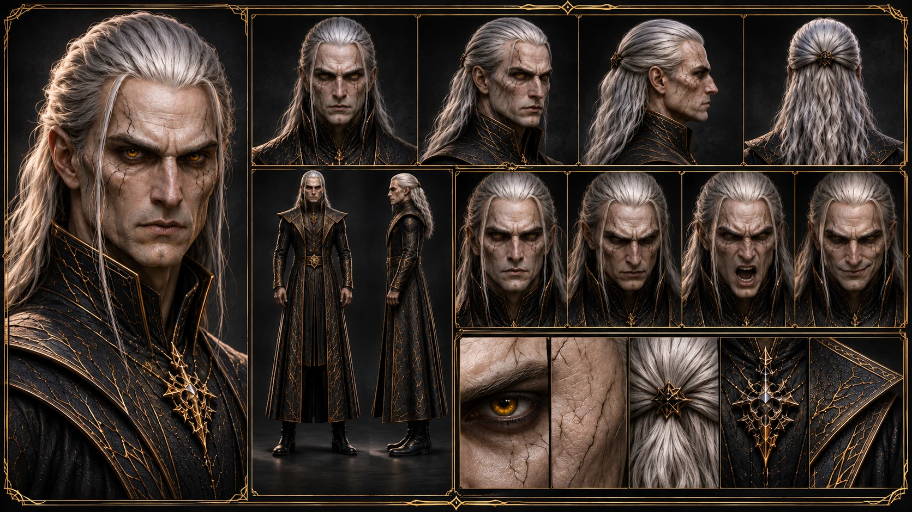

PROFILE
From an old friend to the Dark Lord
Lior met Nairin after the catastrophe that separated them from their former lives. They encountered each other in another world and travelled together for a time. By then, Lior had already spent a long period in hiding from pursuers, while the fate of his parents remained unknown.
Many years passed. Lior became a lord, ruler of his own lands and commander of an army. When Nairin was brought to him as a prisoner, Lior recognised his old friend but concealed that recognition from those around him.
Name: Lior
Title: the Dark Lord
Age: not specified in the manuscripts
Origin: not specified in the manuscripts
Status: lord and ruler of his own lands
Affiliation: the Dark Lord's army and territories
Abilities: opening portals
Community: explicitly states that he belongs to no community
CHARACTER AND CONDUCT
Self-control, distrust and concealed loyalty
Lior is accustomed to living on alert. During his travels with Nairin, he watched for pursuers, avoided exposed places and changed routes quickly. In his present position, he can conceal his feelings and maintain a cold, unreadable expression even when an encounter with his past unsettles him.
Yet Lior has not forgotten his friendship with Nairin. He delays the prisoner's transfer to the Supreme, and when the Prince attempts to break Nairin's will, Lior risks his own position to help him escape.
ABILITIES AND RESOURCES
Portals and a lord's authority
Lior can open portals and uses this ability to travel between locations and Plans. In the past, he and Nairin went through the early stages of portal discovery and thought-link training. In the current events, Lior independently opens a portal to coordinates sent by Marta and takes Nairin out of the Prince's throne room.
As a lord, he has his own territories, military and civilian subjects, apartments and bunkers. His authority is nevertheless limited by his oath to the Prince: the final decision over the lords' territories remains with the Prince.
The manuscripts do not establish any other supernatural abilities or the precise extent of his thought-link skills.
KEY EVENTS AND RELATIONSHIPS
Nairin, Marta and the Prince
Nairin. Lior's old friend. Their reunion after many years begins with distrust and painful accusations concerning Olenka's and Zairin's deaths. Despite their conflict, Lior refuses to let the Prince turn Nairin into a controlled tool for opening portals.
Marta. Lior's ally. She understands his intention to save Nairin, provides the coordinates for the escape and supplies transport. The manuscript also refers to her position and title as a Lady.
The Prince. The supreme ruler to whom Lior has sworn allegiance. Lior understands the consequences of disobedience, but ultimately breaks the order and escapes with Nairin.
The Supreme. The senior authority within the lords' hierarchy, who refuses to save Nairin at the cost of the safety of all the Plans under their protection.
APPEARANCE
Visual canon
The manuscript describes Lior as a man with greying hair, wrinkles and hardened facial features. His eyes show the fatigue of someone who has lived through a long period of war. The clothing details, golden eyes and distinctive facial markings come from your supplied visual reference, not from the written description.